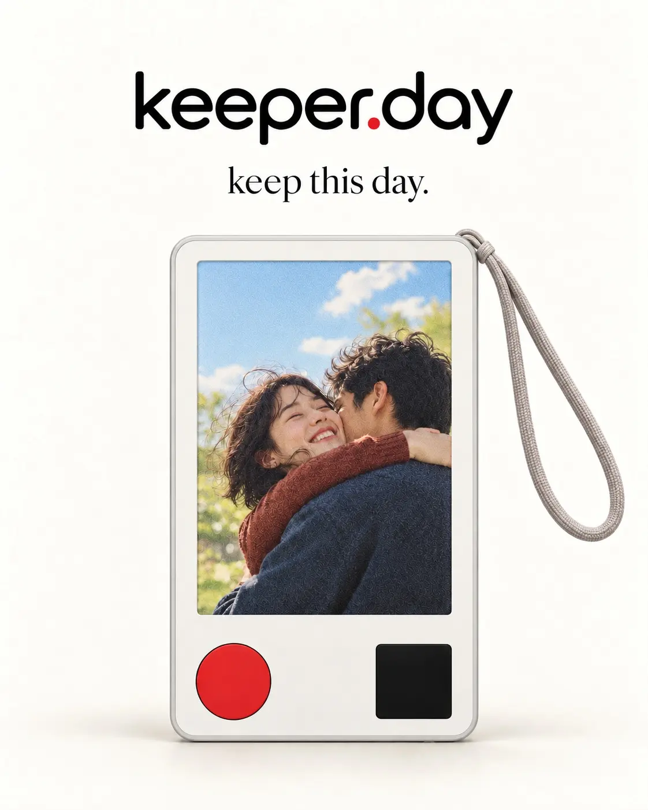
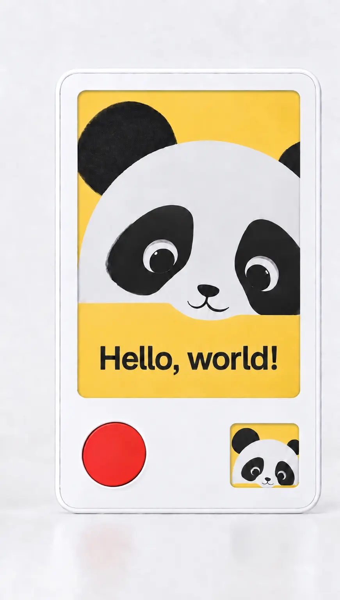
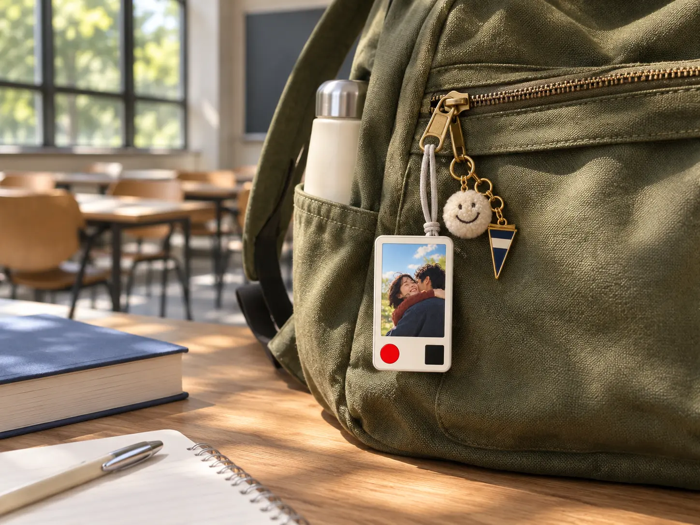
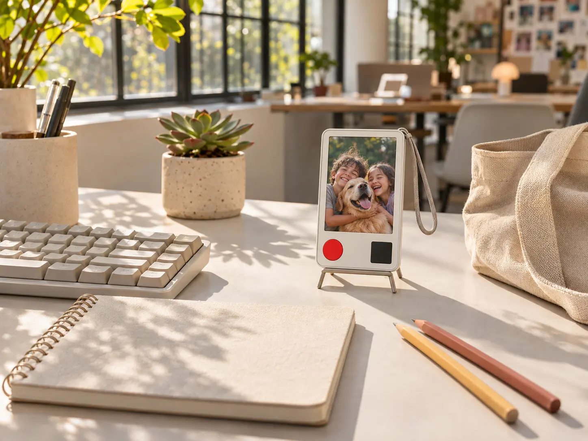
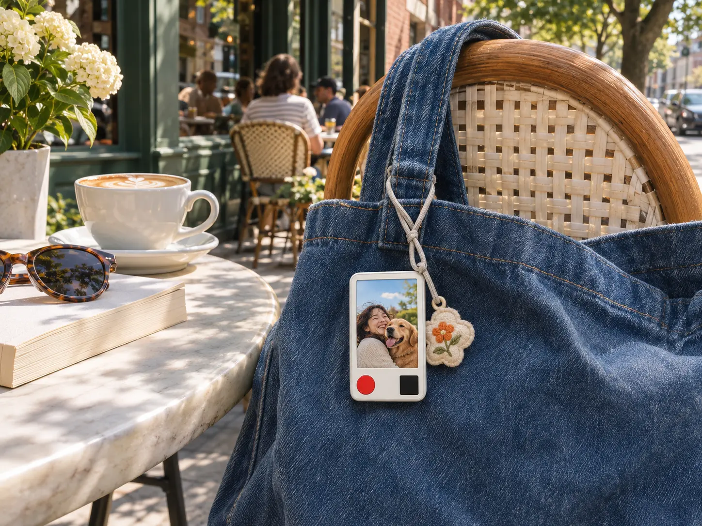

01CAPTURE
See it.
Snap it.
Spot a moment worth remembering. Press the unmistakable red shutter button and make it yours.
A camera. A keepsake. A little joy.
The photo you can't stop smiling at? Give it a place in your day. Meet the little camera that captures the moment and lets it stay in sight.
keeper.day keep this day.

a little01 / It's wonderfully simple
A picture isn't meant to disappear into a camera roll. Keeper turns a fleeting moment into something you can see again in your everyday world.
Spot a moment worth remembering. Press the unmistakable red shutter button and make it yours.

Your chosen image stays visible on its color e-paper display. No endlessly scrolling through your phone to find that feeling again.
02 / The magic of staying
Ordinary screens need to keep glowing. A static image on color e-paper can remain in place without continuous power to maintain the picture.
E-paper's image retention is a display property; final device battery life, performance and specifications are still being developed.
03 / Fits right in
Not another phone to hold. A tiny personal detail that lives alongside the things you already take with you—or quietly makes your desk feel more like yours.

Your favorite smile, right there between notebooks and lectures.

Bring a little piece of home into your nine-to-five.

Something personal on the bag that goes everywhere.
It all counts
04 / A little world of your own
We imagine keeper growing beyond a photo: personal styles, useful little widgets and a companion app that syncs your display preferences to your device over Bluetooth.
CONCEPT PREVIEW These personalization ideas are design directions, not a confirmed list of launch features.
05 / Thoughtfully tiny
One little invitation to capture the good stuff.
A practical glance at what you're about to keep.
Made to feel at home on a bag, beside your keys or in your desk setup. Attachment accessories shown are design concepts.
Why we call it keeper
It's what you say when a photo turns out so good, you know you'll want to keep it. We believe the best moments shouldn't just be saved somewhere. They should get to stay with you.
keeper.day keep this day.
The little details
We're still bringing keeper to life. Here's what we can tell you today.
A little camera with a color e-paper display. The idea is simple: take a photo and keep your chosen moment visible on the device as part of daily life.
Yes—that's a defining property of e-paper. Once a static image is displayed, the panel doesn't need continuous power just to hold that picture. Other parts of the device may still draw power during operation.
Color e-paper is reflective instead of relying on a conventional luminous image, making it well suited to bright environments. Color appearance will vary by light and the final panel.
That's the heart of the concept: press the red shutter control, take a picture, and let that moment remain on the larger display. The smaller square area is a preview element in our design concept.
Those are two of our favorite use cases. We're exploring soft straps, removable accessories and minimal desk stands. The final attachment system is still being refined.
We're exploring Bluetooth-synced preferences such as photo looks, display layouts, calendars, weather and other useful widgets. These are planned directions, not a launch-ready feature commitment.
We haven't announced a tested battery-life figure yet. An e-paper image can persist without continuous display power, but actual battery life depends on the complete hardware and how you use it.
We're developing keeper.day and haven't published final availability, pricing, dimensions or production specifications. This website is an early look at the idea and its design direction.
For all the days worth keeping
Snap the good stuff. Keep it close.
Let the little moments stay a little longer.